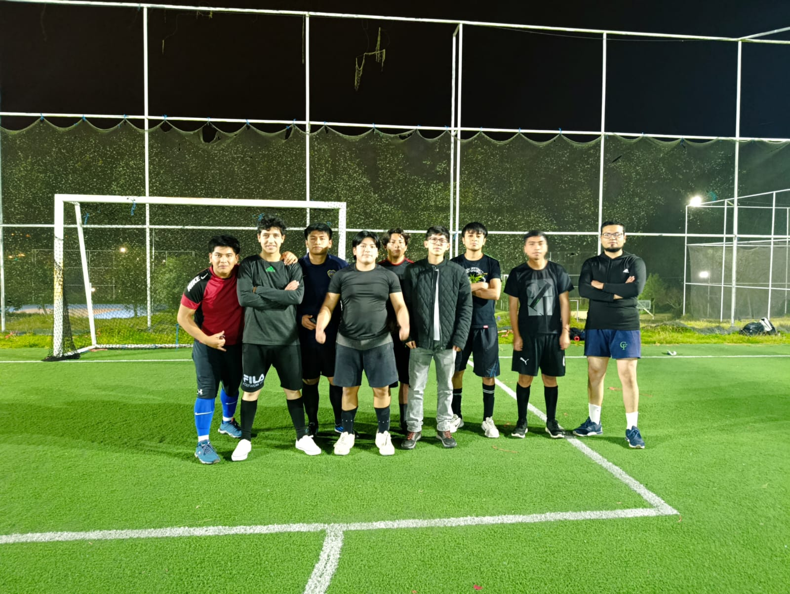
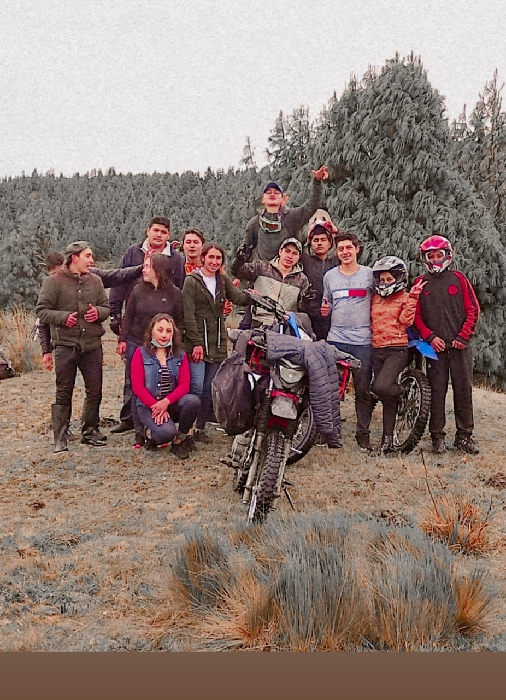
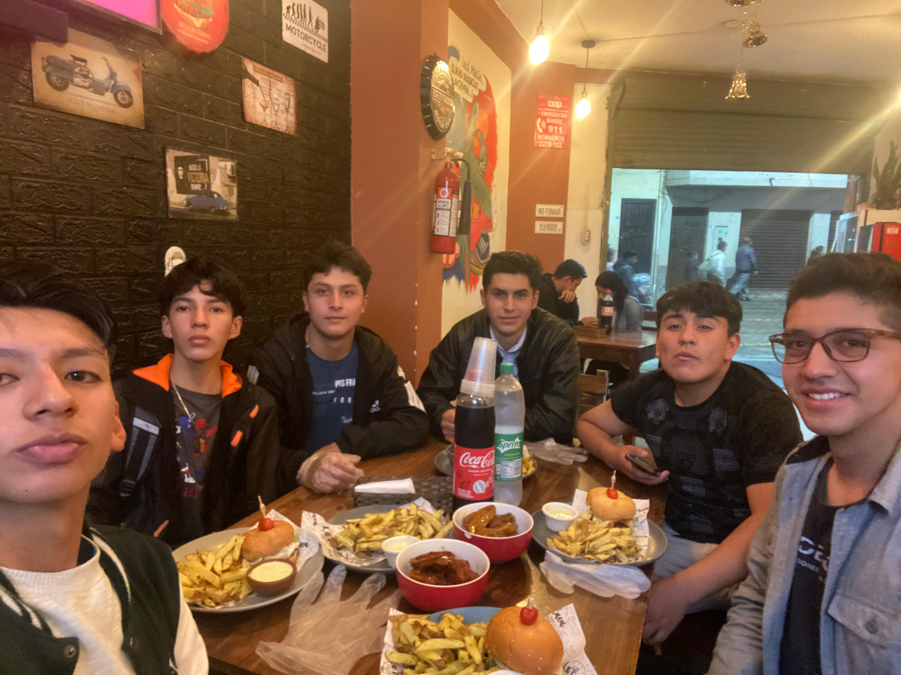

Playing Football

Football is one of my favorite sports. I enjoy playing with friends because it is a great way to exercise, have fun, and work as a team.
In my free time, I enjoy activities that allow me to exercise, explore new places, and spend time with my friends.

Football is one of my favorite sports. I enjoy playing with friends because it is a great way to exercise, have fun, and work as a team.

I enjoy riding my motorcycle and taking routes to different places. It allows me to discover new landscapes, enjoy the road, and visit places outside my usual routine.

I also enjoy going out with my friends. We like spending time together, visiting different places, and sharing experiences.
One of the places I enjoy exploring is Ecuador. You can find information about destinations and activities on Ecuador Travel .